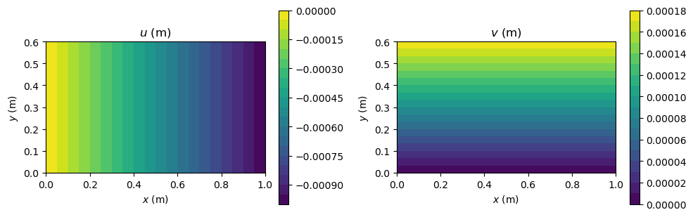
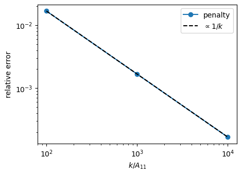

Prescribed displacements#
This example imposes prescribed displacements on a plate, on a cylinder of five domains, and on a point of a plate, and checks the results against exact solutions.
The prescribed displacements of Shell.add_point_pd, Shell.add_distr_pd_fixed_x and Shell.add_distr_pd_fixed_y are imposed by a MultiDomain. With pd_method='null-space' they are imposed exactly: the prescriptions are linear constraints \(\boldsymbol{G}\boldsymbol{c} = \boldsymbol{g}\) on the Ritz constants. Their solutions are \(\boldsymbol{c} = \boldsymbol{c}_p + \boldsymbol{Z}\boldsymbol{q}\), with a particular solution \(\boldsymbol{c}_p\) and a basis
\(\boldsymbol{Z}\) of the null space of \(\boldsymbol{G}\), and the problem is solved for the reduced unknowns \(\boldsymbol{q}\). With pd_method='penalty', springs of large stiffness \(k\) approximate the constraints, with an error of order \(1/k\). See Boundary conditions and Prescribed displacements imposed exactly.
[1]:
%matplotlib inline
import numpy as np
import matplotlib.pyplot as plt
from IPython.display import Markdown, display
from structsolve import lb, solve
from structsolve.sparseutils import finalize_symmetric_matrix
from panels.shell import Shell
from panels.multidomain import MultiDomain
from panels.multidomain.cylinder import create_cylinder
from panels.multidomain.connections import fkCld_xcte
def results_table(rows):
"""Markdown table of (quantity, panels, reference, source) rows"""
out = ['| quantity | panels | reference | relative difference | reference source |',
'|---|---|---|---|---|']
for name, val, ref, src in rows:
out.append('| %s | %.6g | %.6g | %+.2e | %s |'
% (name, val, ref, (val - ref)/abs(ref), src))
display(Markdown('\n'.join(out)))
Patch test: a plate under an end shortening#
An aluminium plate of \(1 \times 0.6\) m, \(h = 2\) mm, \(E = 70\) GPa, \(\nu = 0.3\), has the in-plane displacements free at its edges. It is shortened by \(\delta = 1\) mm: \(u = 0\) along \(x = 0\) (cte=True, a constant prescription) and \(u = -\delta\) along \(x = a\). One point, the corner \((0, 0)\), has \(v = 0\) to remove the rigid-body translation along \(y\). The exact solution is a uniform uniaxial stress state:
which the approximation functions contain, so that the Ritz solution must reproduce it. A single shell is wrapped in an assembly without connections, conn=[], and MultiDomain.linear_static returns the Ritz constants with the prescribed displacements.
[2]:
E, NU, h, delta = 70e9, 0.3, 2e-3, 1e-3
p = Shell(a=1., b=0.6, m=6, n=6, model='plate_clpt_donnell', stack=[0],
plyt=h, laminaprop=(E, NU))
for edge in ('x1', 'x2', 'y1', 'y2'):
setattr(p, edge + 'u', 1.)
setattr(p, edge + 'v', 1.)
p.add_distr_pd_fixed_x(0., ku=1., funcu=lambda y: 0., cte=True)
p.add_distr_pd_fixed_x(p.a, ku=1., funcu=lambda y: -delta, cte=False)
p.add_point_pd(0., 0., 0, None, 1., 0., 0, None)
md = MultiDomain([p], conn=[], pd_method='null-space')
c = md.linear_static()
cp = c[p.col_start:p.col_end]
mesh, f = p.uvw(cp, gridx=21, gridy=13)
X, Y, u, v = mesh['Xs'], mesh['Ys'], f['u'].copy(), f['v'].copy()
_, f = p.stress(cp, gridx=21, gridy=13)
Nxx, Nyy = f['Nxx'].copy(), f['Nyy'].copy()
print('largest error of u: %.2e m, of v: %.2e m'
% (np.abs(u + delta*X/p.a).max(), np.abs(v - NU*delta*Y/p.a).max()))
print('Nxx from %.4f to %.4f N/m, largest |Nyy| %.2e N/m'
% (Nxx.min(), Nxx.max(), np.abs(Nyy).max()))
results_table([
('$u$ at $(a, b)$ (m)', u[-1, -1], -delta, 'exact solution'),
('$v$ at $(a, b)$ (m)', v[-1, -1], NU*delta*p.b/p.a, 'exact solution'),
('mean $N_{xx}$ (N/m)', Nxx.mean(), -E*h*delta/p.a, 'exact solution'),
])
largest error of u: 8.94e-19 m, of v: 4.04e-18 m
Nxx from -140000.0000 to -140000.0000 N/m, largest |Nyy| 5.97e-09 N/m
quantity |
panels |
reference |
relative difference |
reference source |
|---|---|---|---|---|
\(u\) at \((a, b)\) (m) |
-0.001 |
-0.001 |
+4.34e-16 |
exact solution |
\(v\) at \((a, b)\) (m) |
0.00018 |
0.00018 |
+2.24e-14 |
exact solution |
mean \(N_{xx}\) (N/m) |
-140000 |
-140000 |
+0.00e+00 |
exact solution |
[3]:
fig, axes = plt.subplots(1, 2, figsize=(10, 3.2))
for ax, field, title in zip(axes, (u, v), ('$u$ (m)', '$v$ (m)')):
cf = ax.contourf(X, Y, field, levels=20, cmap='viridis')
fig.colorbar(cf, ax=ax)
ax.set_title(title)
ax.set_xlabel('$x$ (m)')
ax.set_ylabel('$y$ (m)')
ax.set_aspect('equal')
fig.tight_layout()
plt.show()

A cylinder under an end shortening#
The laminated cylinder Z11 of Castro et al. (2014), Tables 3 and 4, also used in Cylinders modeled as multi-domain assemblies, is built of five domains of \(16 \times 16\) terms with create_cylinder: radius \(R = 250\) mm, length 510 mm, \([\pm 60/0_2/\pm 68/\pm 52/\pm 37]\) of plies of 0.125 mm. It is compressed in two ways. First a uniform axial load \(N_{xx} = -100\) N/m is applied at \(x = a\). Then the end shortening \(\delta\)
that this load produces is prescribed at \(x = a\). The two give the same pre-buckling state, and the total reaction force at the shortened end, MultiDomain.reaction_resultant, equals the applied load \(N_{xx} 2\pi R\). The critical load of the displacement control is slightly higher, since the prescribed end shortening keeps the end section plane.
The connections are imposed here with the null-space method. The critical axial force under the axial load, \(P_{cr} = -\lambda N_{xx} 2 \pi R\), is compared with 280.08 kN, the CLPT result of Castro et al. (2014), Fig. 4(b), for the full constitutive matrix and the edges SS2. That result assumes a constant pre-buckling stress, where here it comes from a linear static analysis, and has \(u\) free at both ends, where here \(u = 0\) at \(x = 0\).
[4]:
LAMINAPROP = (123.55e9, 8.708e9, 0.319, 5.695e9, 5.695e9, 3.400e9)
R = 0.25
def cylinder(pd_method):
md, conns = create_cylinder(height=0.51, r=R, plyt=0.125e-3,
stack=[60, -60, 0, 0, 68, -68, 52, -52, 37,
-37],
laminaprop=LAMINAPROP, npanels=5, m=16, n=16)
md = MultiDomain(md.panels, conns, pd_method=pd_method)
for p in md.panels:
p.x2u = 1 # u released at x = a, loaded or prescribed there
return md
Nxx = -100.
md = cylinder('null-space')
for p in md.panels:
p.add_distr_load_fixed_x(p.a, lambda y: Nxx, None, None)
eig_N, modes_N = md.linear_buckling(num_eigvalues=3)
c_N = md.linear_static()
p0 = md.panels[0]
delta = -p0.uvw(c_N[p0.col_start:p0.col_end], gridx=7, gridy=5)[1]['u'][0, -1]
print('axial load: P_cr = %.2f kN, end shortening %.6e m'
% (-Nxx*eig_N[0]*2*np.pi*R/1e3, delta))
md_d = cylinder('null-space')
for p in md_d.panels:
p.add_distr_pd_fixed_x(p.a, ku=1., funcu=lambda y: -delta, cte=False)
eig_d, modes_d = md_d.linear_buckling(num_eigvalues=3)
c_d = md_d.linear_static()
F = md_d.reaction_resultant(c_d, [(p, 'x', p.a) for p in md_d.panels],
NLgeom=False)
print('end shortening: critical multiplier %.6f, ratio to the axial load '
'%.5f' % (eig_d[0], eig_d[0]/eig_N[0]))
print('largest difference of the pre-buckling Ritz constants: %.2e of the '
'largest' % (np.abs(c_d - c_N).max()/np.abs(c_N).max()))
results_table([
('$P_{cr}$, axial load (kN)', -Nxx*eig_N[0]*2*np.pi*R/1e3, 280.08,
'Castro et al. (2014), Fig. 4(b), CLPT-BC2 SS2'),
('axial reaction at $x = a$ (N)', F[0], Nxx*2*np.pi*R,
'equilibrium, $N_{xx} 2 \\pi r$'),
])
axial load: P_cr = 279.32 kN, end shortening 9.822630e-07 m
end shortening: critical multiplier 1782.678943, ratio to the axial load 1.00252
largest difference of the pre-buckling Ritz constants: 1.60e-07 of the largest
quantity |
panels |
reference |
relative difference |
reference source |
|---|---|---|---|---|
\(P_{cr}\), axial load (kN) |
279.319 |
280.08 |
-2.72e-03 |
Castro et al. (2014), Fig. 4(b), CLPT-BC2 SS2 |
axial reaction at \(x = a\) (N) |
-157.08 |
-157.08 |
-1.54e-13 |
equilibrium, \(N_{xx} 2 \pi r\) |
With the penalty method the springs of fkCld_xcte, of stiffness \(k\) per unit length, are added by the user to the stiffness matrix, and the prescribed value enters \(\boldsymbol{F}_{ext}\) as \(k u_p\). The connections of the domains are still exact, by the null space of MultiDomain.reduce. The critical load converges to that of the null-space method as \(k\) increases, with an error proportional to \(1/k\):
[5]:
factors = [1e2, 1e3, 1e4]
errors = []
for factor in factors:
md_p = cylinder('penalty')
size = md_p.get_size()
k = factor*md_p.panels[0].lam.ABD[0, 0]
kCp = 0.
for p in md_p.panels:
p.add_distr_pd_fixed_x(p.a, ku=k, funcu=lambda y: -delta, cte=False)
kCp = kCp + fkCld_xcte(k, 0., 0., p, p.a, size, p.row_start,
p.col_start)
K = md_p.calc_kC(silent=True) + finalize_symmetric_matrix(kCp)
c = md_p.expand(solve(md_p.reduce(K), md_p.reduce(md_p.calc_fext()),
silent=True))
eig, _ = lb(md_p.reduce(K), md_p.reduce(md_p.calc_kG(c=c, silent=True)),
silent=True, num_eigvalues=3)
errors.append(eig[0]/eig_d[0] - 1)
print('k = %.0e A11: relative error of the critical load %.3e'
% (factor, errors[-1]))
fig, ax = plt.subplots(figsize=(5, 3.5))
ax.loglog(factors, errors, 'o-', label='penalty')
ax.loglog(factors, errors[0]*factors[0]/np.array(factors), 'k--',
label='$\\propto 1/k$')
ax.set_xlabel('$k/A_{11}$')
ax.set_ylabel('relative error')
ax.legend()
plt.show()
k = 1e+02 A11: relative error of the critical load 1.671e-02
k = 1e+03 A11: relative error of the critical load 1.670e-03
k = 1e+04 A11: relative error of the critical load 1.670e-04

A point supported by penalty springs#
Without an assembly, a point of a Shell is supported by the penalty springs of Shell.calc_stiffness_point_constraint, added to the stiffness matrix. Here the center of a square aluminium plate of 1 m, \(h = 2\) mm, simply supported, is supported by a spring of \(10^{12}\) N/m in \(w\). A unit point force at the same point then produces almost no deflection there; without the spring the plate deflects freely.
[6]:
s = Shell(a=1., b=1., r=None, stack=[0], plyt=2e-3, laminaprop=(71e9, 0.33),
model='plate_clpt_donnell', m=6, n=6)
s.add_point_load(0.5, 0.5, 0, 0, 1.)
kC = s.calc_kC()
xs, ys = np.array([0.5]), np.array([0.5])
c = solve(kC + s.calc_stiffness_point_constraint(0.5, 0.5, u=False, v=False,
kuvw=1e12),
s.calc_fext(), silent=True)
w_constrained = s.uvw(c, xs=xs, ys=ys)[1]['w'][0]
c = solve(kC, s.calc_fext(), silent=True)
w_free = s.uvw(c, xs=xs, ys=ys)[1]['w'][0]
print('w at the center: %.3e m with the spring, %.3e m without; ratio %.2e'
% (w_constrained, w_free, w_constrained/w_free))
w at the center: 1.000e-12 m with the spring, 1.972e-04 m without; ratio 5.07e-09
The critical force under the axial load is within a few tenths of a percent of the reference, see Cylinders modeled as multi-domain assemblies for the convergence with the number of terms and the effect of the constant pre-buckling stress.
References#
Castro, C. Mittelstedt, F. A. C. Monteiro, M. A. Arbelo, G. Ziegmann and R. Degenhardt, “Linear buckling predictions of unstiffened laminated composite cylinders and cones under various loading and boundary conditions using semi-analytical models”. Composite Structures, 118:303-315, 2014. https://doi.org/10.1016/j.compstruct.2014.07.037.